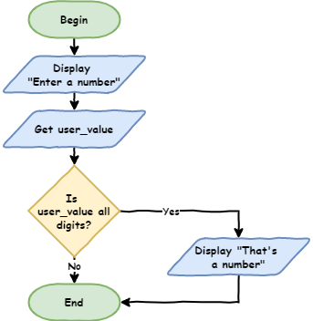
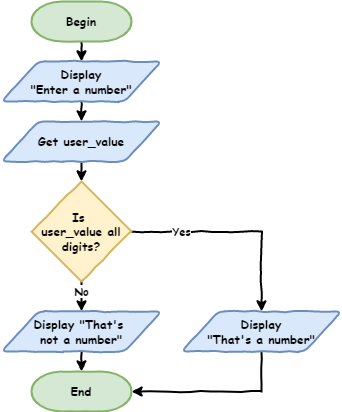
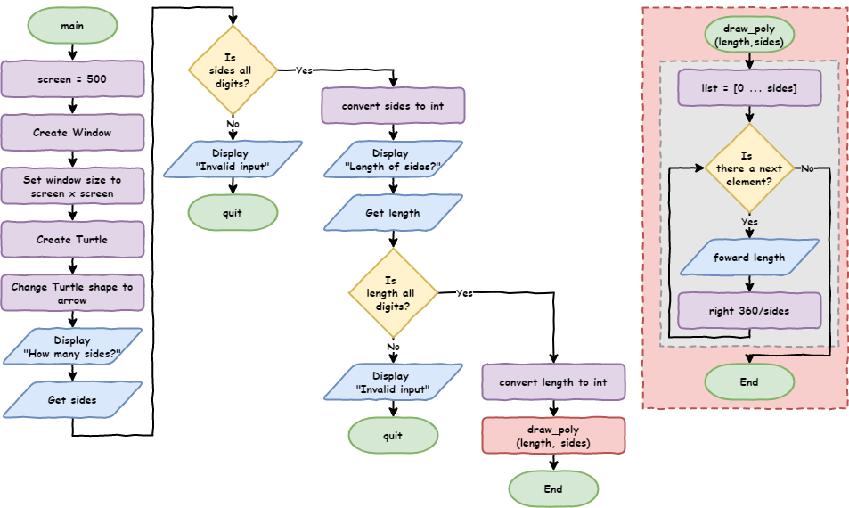
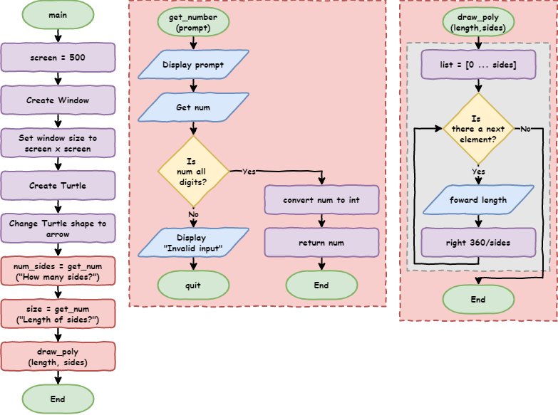
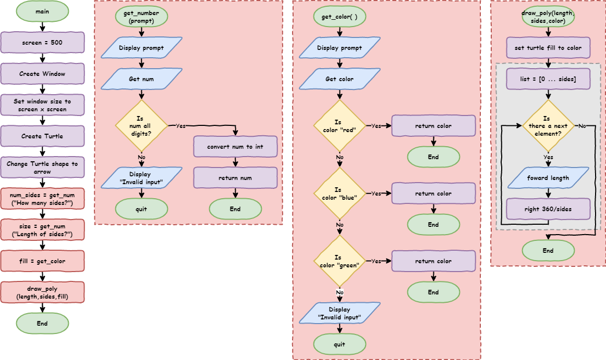
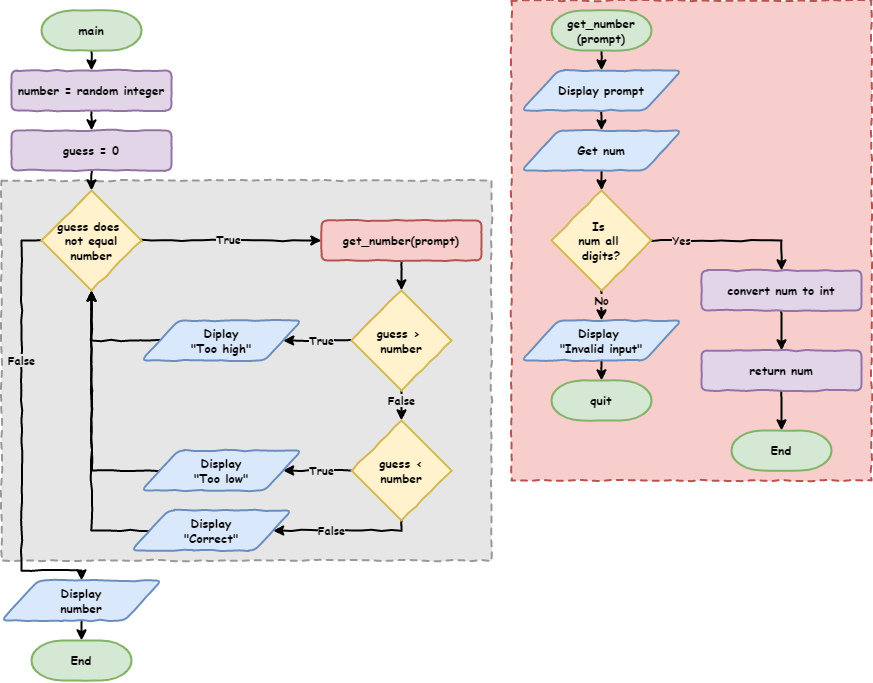
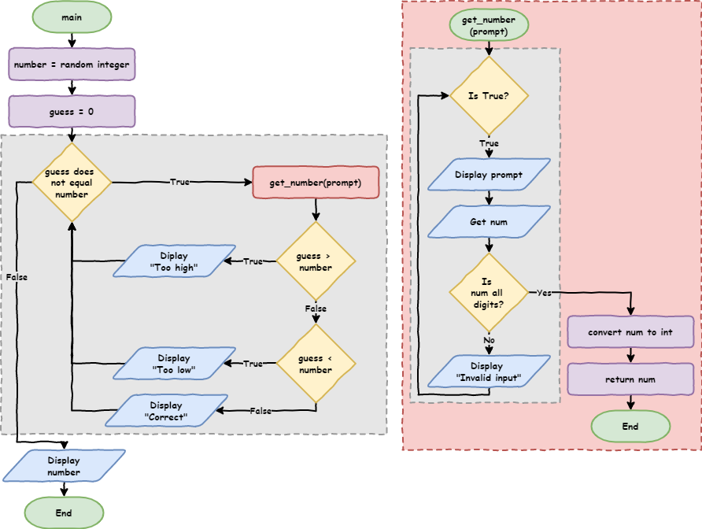

Python Turtle - Lesson 5¶
Part 1: Branching¶
Branching control structure¶
Branching lets your program choose between different paths, depending on what is happening.
To understand this, let’s look at a real example.
We are going to use the file called lesson_4_pt_2.py. You can either:
save your old file as a copy called lesson_5_pt_1a.py, or
download the
lesson_5_pt_1a.pyfile instead.
1import turtle
2
3
4def draw_poly(length, sides):
5 for i in range(sides):
6 my_ttl.forward(length)
7 my_ttl.right(360 / sides)
8
9
10# setup window
11screen = 500
12window = turtle.Screen()
13window.setup(screen, screen)
14
15# create instance of turtle
16my_ttl = turtle.Turtle()
17my_ttl.shape("turtle")
18
19num_sides = int(input("How many sides?> "))
20size = int(input("Length of sides?> "))
21
22draw_poly(size, num_sides)
Run the program.
When it asks you to enter a number, type the word dog.
This will cause an error below to happen.
1Traceback (most recent call last):
2 File "<string>", line 19, in <module>
3ValueError: invalid literal for int() with base 10: 'dog'
This error happens because on line 19, the program is trying to turn the word dog into a number.
But dog is not a number, so Python doesn’t know how to convert it, and the program crashes.
To fix this, we need to check that the user has typed a whole number before we try to convert it into an integer.
Showing variable types¶
Create a new file.
Type in the code shown below, then save the file as lesson_5_pt_1b.py.
1user_value = input("Enter a number: ")
2
3print(user_value.isdigit())
Predict
Predict what you think will happen when you run the code two times:
first time, type
10second time, type
dog
Run
Run the code.
Did it do what you thought it would do?
Investigate
Let’s investigate the code.
Remember, anything you type into Python using input is treated as text (a string).
Strings have built-in tools called methods that help us work with them.
One of these methods is called isdigit.
The isdigit method checks if all the characters in a string are numbers.
It returns
Trueif they are all digitsIt returns
Falseif they are not
String Methods
Python has many useful string methods. If you want to explore them W3Schools’ Python String Methods is a good place to start.
Now we can check if the user has typed a number or not.
Next, we need to tell the computer what to do based on that result.
The if statement¶
Change your lesson_5_pt_1b.py code so it matches the code below.
1user_value = input("Enter a number: ")
2
3if user_value.isdigit():
4 print("That's a number")
Predict
Predict what you think will happen when you run the code two times:
first time, type
10second time, type
dog
Run
Run the code.
Did it do what you thought it would do?
Investigate
Let’s investigate that code.
Flowcharts
Flowcharts are useful for showing how a program makes decisions.
We have already used the diamond shape (called a condition) in our for loops.
The same diamond shape is also used to show the conditions in if statements.
Code flowchart:

Code breakdown:
Line 3:if user_value.isdigit():This is an
ifstatement.iftells Python to make a decision.The next part is called a condition.
A condition checks something and gives back either
TrueorFalse.Here, the condition is
user_value.isdigit()From earlier:
10→Truedog→False
The line ends with
:This tells Python that the next lines will be part of this
ifstatement.
The indented code underneath will only run if the condition is
True:10→True→ run the indented codedog→False→ skip the indented code
Line 4:print("That's a number")This line is inside the
ifstatement (because it is indented).It only runs if
user_value.isdigit()isTrue
Right now, the program only does something when the input is a number.
But what about when the input is not a number?
The if … else statement¶
Change your lesson_5_pt_1b.py code by adding lines 5 and 6 shown below.
1user_value = input("Enter a number: ")
2
3if user_value.isdigit():
4 print("That's a number")
5else:
6 print("That's not a number")
Predict
Predict what you think will happen when you run the code two times:
first time, type
10second time, type
dog
Run
Run the code.
Did it do what you thought it would do?
Investigate
Let’s investigate the code.
Here is the flowchart for the code:

Code breakdown:
Lines 3and4work the same as before.Line 5-else:The
elseis linked to theifstatement.It runs when the
ifcondition isFalse.In this case, it means: if
user_value.isdigit()isFalse, run the code below.The
:tells Python that an indented block of code is coming next.
Line 6-print("That's not a number")This line is inside the
elseblock (because it is indented).It only runs when
user_value.isdigit()isFalse
To look at the code more closely, step through it using the debugger.
Test it two times:
first, enter
10then, enter
dog
Watch what happens on each line as the program decides which path to follow.
Using if … else to capture errors
Go back to lesson_5_pt_1a.py.
Change line 19 so it matches the code shown below.
1# get user input
2num_sides = input("How many sides?> ")
3if num_sides.isdigit():
4 num_sides = int(num_sides)
5else:
6 print("Invalid input")
7 quit()
Your code should now look like the example shown below.
1import turtle
2
3
4def draw_poly(length, sides):
5 for i in range(sides):
6 my_ttl.forward(length)
7 my_ttl.right(360 / sides)
8
9
10# setup window
11screen = 500
12window = turtle.Screen()
13window.setup(screen, screen)
14
15# create instance of turtle
16my_ttl = turtle.Turtle()
17my_ttl.shape("turtle")
18
19# get user input
20num_sides = input("How many sides?> ")
21if num_sides.isdigit():
22 num_sides = int(num_sides)
23else:
24 print("Invalid input")
25 quit()
26
27size = input("Length of sides?> ")
28
29draw_poly(size, num_sides)
Then change line 27 so it matches the code shown below.
1size = input("Length of sides?> ")
2if size.isdigit():
3 size = int(size)
4else:
5 print("Invalid input")
6 quit()
Your code should now look like the example shown below.
1import turtle
2
3
4def draw_poly(length, sides):
5 for i in range(sides):
6 my_ttl.forward(length)
7 my_ttl.right(360 / sides)
8
9
10# setup window
11screen = 500
12window = turtle.Screen()
13window.setup(screen, screen)
14
15# create instance of turtle
16my_ttl = turtle.Turtle()
17my_ttl.shape("turtle")
18
19# get user input
20num_sides = input("How many sides?> ")
21if num_sides.isdigit():
22 num_sides = int(num_sides)
23else:
24 print("Invalid input")
25 quit()
26
27size = input("Length of sides?> ")
28if size.isdigit():
29 size = int(size)
30else:
31 print("Invalid input")
32 quit()
33
34draw_poly(size, num_sides)
Let’s test the code and check if it works.
Predict
Predict what you think will happen when you run the code in these situations:
valid
sidesvalue and validsizevaluevalid
sidesvalue and invalidsizevalueinvalid
sidesvalue and validsizevalueinvalid
sidesvalue and invalidsizevalue
Run
Run the code. Did it do what you expected?
More testing tips
When testing branching code you need to test all possible paths.
Test
ifstatements for bothTrueconditions andFalseconditions.This code had four possible branches so we needed to test all four of them
Investigate
Let’s investigate the code.
Here is the flowchart for the code:

Code breakdown:
Line 19:# get user input→ a comment to help organise the codeLine 20:num_sides = input("How many sides?> ")→ asks the user for input and stores it innum_sidesLine 21:if num_sides.isdigit():→ checks ifnum_sidesis made up of only numbersif this is
True, the next indented lines will run
Line 22:num_sides = int(num_sides)→ changesnum_sidesfrom text into a numberLine 23:else:→ runs ifnum_sidesis not a numberLine 24:print("Invalid input")→ tells the user something went wrongLine 25:quit()→ stops the programLine 27:size = input("Length of sides?> ")→ asks the user for another input and stores it insizeLine 28:if size.isdigit():→ checks ifsizeis made up of only numbersif this is
True, the next indented lines will run
Line 29:size = int(size)→ changessizefrom text into a numberLine 30:else:→ runs ifsizeis not a numberLine 31:print("Invalid input")→ tells the user something went wrongLine 32:quit()→ stops the program
Refactor Code - DRY¶
When we look at our code, it does not pass the DRY test.
DRY means Don’t Repeat Yourself.
Our # get user input section from line 17 to 30 repeats the same pattern twice.
Both parts of the code:
ask the user for input
check if the input is only numbers
either change it into an integer or stop the program
The only things that change are:
the message shown to the user
Line 20→"How many sides?> "Line 27→"Length of sides?> "
the variable name being used
Lines 20to25→num_sidesLines 27to32→size
This makes it a good chance to refactor the code by using a function.
What is refactoring?
Refactoring means changing your code without changing what it does.
We do this to make the code better.
Efficient code uses fewer resources (like processing power, storage, or internet).
Maintainable code is easier to read, understand, fix, and improve later.
To refactor our code, add the function shown below at line 10 in your code.
def get_number(prompt):
num = input(prompt)
if num.isdigit():
return int(num)
else:
print("Invalid input")
quit()
Then delete the code under # get user input from lines 19 to 32.
Replace it with two calls to the function instead.
# get user input
num_sides = get_number("How many sides?> ")
size = get_number("Length of sides?> ")
At the end, your code should look like the example shown below.
1import turtle
2
3
4def draw_poly(length, sides):
5 for i in range(sides):
6 my_ttl.forward(length)
7 my_ttl.right(360 / sides)
8
9
10def get_number(prompt):
11 num = input(prompt)
12 if num.isdigit():
13 return int(num)
14 else:
15 print("Invalid input")
16 quit()
17
18
19# setup window
20screen = 500
21window = turtle.Screen()
22window.setup(screen, screen)
23
24# create instance of turtle
25my_ttl = turtle.Turtle()
26my_ttl.shape("turtle")
27
28# get user input
29num_sides = get_number("How many sides?> ")
30size = get_number("Length of sides?> ")
31
32draw_poly(size, num_sides)
Run
When you refactor code, it is important to ensure the code still works the same. So run the code to ensure that it still works the same way.
Remember to test all 4 possible branches:
valid
sidesvalue and validsizevaluevalid
sidesvalue and invalidsizevalueinvalid
sidesvalue and validsizevalueinvalid
sidesvalue and invalidsizevalue
Investigate
If your code still works the same, let’s investigate the new code you added.
Here is the flowchart for that code:

Code breakdown:
The
get_numberfunction:def get_number(prompt):→ creates a new function with one input calledpromptwe saw earlier that the prompt text was different in each part of the code
using
promptmeans we can change the message each time we use the function
num = input(prompt)→ shows the prompt to the user and stores what they type innumif num.isdigit():→ checks ifnumis made up of only numbersreturn int(num)→ changesnuminto a number and sends it back to the main programreturnis newit sends a value back and then stops the function
else:→ runs ifnumis not a numberprint("Invalid input")→ tells the user their input is wrongquit()→ stops the program
num_sides = get_number("How many sides?> ")→ uses the functionget_number()→ runs the function"How many sides?> "→ is the message shown to the usernum_sides =→ stores the value returned from the function
size = get_number("Length of sides?> ")→ uses the function againget_number()→ runs the function"Length of sides?> "→ is the message shown to the usersize =→ stores the value returned from the function
Playing with colour¶
Let’s add a new feature to our program.
With Turtle, you can change the colour of your shapes and lines using the color method.
The color method takes two inputs:
first input → the colour of the line
second input → the colour used to fill the shape
Spelling colour / color
Python uses US spelling for its built-in functions.
If you use Australian spelling (like colour), your program will cause an error.
When naming your own variables and functions, you can choose either spelling.
However, it is best to stay consistent. Using the same spelling every time helps prevent mistakes.
Now let’s change the colour of the shape.
Update your code by making changes to:
Line 5Line 6Line 35
1import turtle
2
3
4def draw_poly(length, sides, color):
5 my_ttl.color("black", color)
6 my_ttl.begin_fill()
7 for i in range(sides):
8 my_ttl.forward(length)
9 my_ttl.right(360 / sides)
10 my_ttl.end_fill()
11
12
13def get_number(prompt):
14 num = input(prompt)
15 if num.isdigit():
16 return int(num)
17 else:
18 print("Invalid input")
19 quit()
20
21
22# setup window
23screen = 500
24window = turtle.Screen()
25window.setup(screen, screen)
26
27# create instance of turtle
28my_ttl = turtle.Turtle()
29my_ttl.shape("turtle")
30
31# get user input
32num_sides = get_number("How many sides?> ")
33size = get_number("Length of sides?> ")
34
35draw_poly(size, num_sides, "red")
Predict and Run
Predict what you think will happen when you run the code
Then run the code
Did it do what you thought it would do?
Investigate
Let’s investigate the code.
Code breakdown:
def draw_poly(length, sides, color):→ the function now takes three inputs, includingcolormy_ttl.color("black", color)→ sets the turtle’s coloursline colour →
"black"fill colour → the value stored in
color
Turtle colours
Turtle lets you use colour names to change how things look.
You can also use RGB and Hex colours, but you don’t need those yet.
Using simple colour names is enough for now.
Now that we can change the colour, we can let the user choose a fill colour.
We want them to choose from:
redbluegreen
We also need to handle mistakes. If the user types something else, we need to catch that error.
An if ... else only gives us two choices:
one for
Trueone for
False
But here we need more than two choices.
To handle this, we use elif.
elif lets us check multiple conditions, one after another.
The if … elif … else statement¶
The elif statement is like combining else and if.
It lets your program choose between many different options, not just two.
The best way to understand it is to use it in your code.
Create a function that lets the user choose a fill colour:
redbluegreen
Update your code so it matches the example below.
Make changes to:
Lines 22to32Line 47Line 49
1import turtle
2
3
4def draw_poly(length, sides, color):
5 my_ttl.color("black", color)
6 my_ttl.begin_fill()
7 for i in range(sides):
8 my_ttl.forward(length)
9 my_ttl.right(360 / sides)
10 my_ttl.end_fill()
11
12
13def get_number(prompt):
14 num = input(prompt)
15 if num.isdigit():
16 return int(num)
17 else:
18 print("Invalid input")
19 quit()
20
21
22def get_color():
23 color = input("Fill colour (red, blue, green)?> ").lower()
24 if color == "red":
25 return color
26 elif color == "blue":
27 return color
28 elif color == "green":
29 return color
30 else:
31 print("Invalid input")
32 quit()
33
34
35# setup window
36screen = 500
37window = turtle.Screen()
38window.setup(screen, screen)
39
40# create instance of turtle
41my_ttl = turtle.Turtle()
42my_ttl.shape("turtle")
43
44# get user input
45num_sides = get_number("How many sides?> ")
46size = get_number("Length of sides?> ")
47fill = get_color()
48
49draw_poly(size, num_sides, fill)
Predict and Run
Predict what you think will happen when you run the code.
Then run the code.
Did it do what you thought it would do?
Investigate
Let’s investigate the code.
There are some new ideas to understand:
Line 23:color = input("Fill colour (red, blue, green)?> ").lower()lower()is newit is a string method
it changes all letters to lowercase
this means
Red,RED, orrEdwill all becomered
Line 24:if color == "red":checks if the user typed
"red"
Line 25:return colorsends the value of
color(here it would be"red") back to the main programthen stops the function
Line 26:elif color == "blue":runs only if the first
ifwasFalsechecks if the user typed
"blue"
Line 27:return colorsends
"blue"back to the main programthen stops the function
Line 28:elif color == "green":runs only if the first two checks were
Falsechecks if the user typed
"green"
Line 29:return colorsends
"green"back to the main programthen stops the function
Line 30:else:runs if none of the options (
red,blue,green) were correct
Line 31andLine 32work the same as before
show an error message and stop the program
Code flowchart:

The if … elif … else statement is very useful and flexible.
You will use it in many different ways, so let’s look at the rules for how it works.
if…elif…else structure¶
The full structure of an if … elif … else statement works like this:
the
ifpartalways comes first
is required (you must have it)
there can only be one
ifit checks the first condition
the
elifpartcomes after the
ifand before theelseis optional (you don’t have to use it)
you can have as many
elifparts as you needit only runs if all the earlier conditions are
False
the
elsepartalways comes last
is optional
there can only be one
elseit runs if none of the other conditions were
True
Part 1 Exercises¶
In this course, the exercises are the make component of the PRIMM model. So work through the following exercises and make your own code.
Exercise 1
Download lesson_5_ex_1.py file and save it in your lesson folder.
Follow the instructions in the comments and use your Python knowledge to create a password checker. Remember to apply the DRY principle
The starting code is shown below:
1# Amy's security guard program
2
3######################################################
4## Write a program that asks for a person's name ##
5## if that person is Amy they are granted entry ##
6## other wise they are politely told to go away ##
7######################################################
Exercise 2
Download lesson_5_ex_2.py file and save it in your lesson folder.
Follow the instructions in the comments and use your Python knowledge to create an enhanced password checker. Remember to apply the DRY principle
The starting code is shown below:
1# Amy's security guard program
2
3friends = "Bruce"
4
5######################################################
6## Write a program that asks for a person's name ##
7## and then grants entry of that person is Amy ##
8## or a friend of Amy. ##
9## Everyone else is told, politely, to go away ##
10######################################################
Exercise 3
Download lesson_5_ex_3.py file and save it in your lesson folder.
Follow the instructions in the comments (check line 41) and use your Python knowledge to enhance our shape drawing code. Remember to apply the DRY principle.
The starting code is shown below:
1import turtle
2
3#####################################################
4## Adjust the code below to allow the user to ##
5## choose the coordinates where the shape is drawn ##
6#####################################################
7
8
9def draw_poly(length, sides, color):
10 my_ttl.color("black", color)
11 my_ttl.begin_fill()
12 for i in range(sides):
13 my_ttl.forward(length)
14 my_ttl.right(360 / sides)
15 my_ttl.end_fill()
16
17
18def get_number(prompt):
19 num = input(prompt)
20 if num.lstrip("-").isdigit():
21 return int(num)
22 else:
23 print("Invalid input")
24 quit()
25
26
27def get_color():
28 color = input("Fill colour (red, blue, green)?> ").lower()
29 if color == "red":
30 return color
31 elif color == "blue":
32 return color
33 elif color == "green":
34 return color
35 else:
36 print("Invalid input")
37 quit()
38
39
40def move_pen():
41 # replace 'pass' with your code to get coordinates from user #
42 pass
43
44# setup window
45screen = 500
46window = turtle.Screen()
47window.setup(screen, screen)
48
49# create instance of turtle
50my_ttl = turtle.Turtle()
51my_ttl.shape("turtle")
52
53# get user input
54num_sides = get_number("How many sides?> ")
55size = get_number("Length of sides?> ")
56fill = get_color()
57
58draw_poly(size, num_sides, fill)
Part 2: While Loop¶
In Python, there are two types of loops.
We have already used the for loop. Now we will learn about the while loop.
These two loops match two different ways of repeating code:
definite iteration
used when you know how many times the loop will run
uses a
forloop because it runs a set number of times
indefinite iteration
used when you don’t know how many times the loop will run
uses a
whileloop because it keeps going while something isTrue
Example using card games:
Dealing cards in Uno:
each player gets 7 cards
you deal cards 7 times
this is definite iteration
Dealing cards in Snap:
you don’t know how many cards each player will get
you keep dealing until the deck is empty
this is indefinite iteration
Summary:
forloop → runs a set number of times (count controlled)whileloop → runs until a condition changes (condition controlled)
To understand while loops, let’s look at a number guessing game.
Number guessing game¶
Download the lesson_5_pt_2.py file and save it in your lesson folder.
The starting code is shown below:
1import random
2
3
4def get_number(prompt):
5 num = input(prompt)
6 if num.isdigit():
7 return int(num)
8 else:
9 print("Invalid input")
10 quit()
11
12
13number = random.randint(1, 100)
14
15guess = get_number("Guess a number between 1 and 100> ")
16
17if guess == number:
18 print("Correct!")
19else:
20 print("Incorrect. The number was", number)
Predict and Run
Predict what you think will happen when you run the code
Run the code
Did it do what you thought it would do?
What is the random module?
The random module lets Python create random results.
It includes different tools (functions) you can use to get random values.
To see all the available functions, visit the W3Schools Python Random Module page.
Investigate - Code breakdown
Line 1:import randomwe need this so we can use random number tools
we will use a function called
randint
Lines 4to10this is the same
get_numberfunction you used before
Line 13:number = random.randint(1,100)random.randint(1,100)picks a random whole number between
1and100both
1and100are included
number =stores that random number in the variable
number
Line 15:guess = get_number("Guess a number between 1 and 100> ")asks the user to guess a number
uses the
get_numberfunction to make sure it is validstores the result in
guess
Line 17:if guess == number:checks if the guess is the same as the random number
==means “is equal to”this is a comparison operator
if they are the same, the code inside the
ifwill run
Line 19:else:runs if the guess is not the same as the random number
the code inside
elsewill run instead
Comparison operators
A comparison operator compares two values and gives back either True or False.
Python uses these comparison operators:
Operator |
Meaning |
|---|---|
|
checks if two values are the same |
|
checks if two values are different |
|
checks if the left value is greater than the right value |
|
checks if the left value is less than the right value |
|
checks if the left value is greater than or equal to the right value |
|
checks if the left value is less than or equal to the right value |
Better game¶
Right now, the game only gives you one guess, so it’s not very fun.
Let’s improve it by giving the player 10 guesses.
This means the code needs to repeat something. That is called iteration.
Which type of iteration is it?
we know how many times it will run (10 times)
so this is definite iteration
definite iteration uses a
forloop
Update your code so it matches the example below.
1import random
2
3
4def get_number(prompt):
5 num = input(prompt)
6 if num.isdigit():
7 return int(num)
8 else:
9 print("Invalid input")
10 quit()
11
12
13number = random.randint(1, 100)
14
15print("You have 10 turns to guess a number between 1 and 100")
16
17for turn in range(10):
18 guess = get_number("Guess a number between 1 and 100> ")
19
20 if guess == number:
21 print("Correct!")
22 else:
23 print("Incorrect. Try again")
24
25print("The number was", number)
Predict and Run
Predict what you think will happen when you run the code
Run the code
Did it do what you thought it would do?
Investigate - Code breakdown
line 15→ add instructions to tell the user they have 10 guesseslines 17to23→ put the guessing code inside aforloop so it runs 10 timesline 23→ remove the part that shows the number too earlyline 25→ show the number after all 10 guesses are finished
Even Better Game¶
This version is better, but it is still not very fun.
Each guess is random, and the player doesn’t learn anything from previous guesses.
Let’s improve it by giving hints:
tell the user if their guess is too high
or too low
To do this, change the if ... else into an if ... elif ... else on lines 20 to 25.
This will let the program give different feedback depending on the guess.
1import random
2
3
4def get_number(prompt):
5 num = input(prompt)
6 if num.isdigit():
7 return int(num)
8 else:
9 print("Invalid input")
10 quit()
11
12
13number = random.randint(1, 100)
14
15print("You have 10 turns to guess a number between 1 and 100")
16
17for turn in range(10):
18 guess = get_number("Guess a number between 1 and 100> ")
19
20 if guess > number:
21 print("Guess is too high")
22 elif guess < number:
23 print("Guess is too low")
24 else:
25 print("Correct!")
26
27print("The number was", number)
We’ve written a lot of code, so now we need to test it properly.
Run your program multiple times until you see all four outcomes:
the guess is too high
the guess is too low
the guess is correct
all 10 guesses are used and the number is still not found
To make testing easier, you can temporarily show the random number:
add a line to print the number
once you finish testing, comment that line out so it doesn’t show during normal use
Predict and Run
Predict what you think will happen when:
the guess is too high
the guess is too low
the guess is correct
all 10 guesses are used and the number is still not found
Then run the code
Did it do what you thought it would do?
Did you notice the problem?
When the user guesses the correct number, the game says Correct!…
but it keeps asking for more guesses.
This happens because we used a for loop.
A for loop will always run a set number of times (in this case, 10), no matter what.
What we actually want is for the game to stop as soon as the correct number is guessed.
This means we need a different type of loop:
one that keeps going until something happens
This is called indefinite iteration, and we use a while loop for this.
Using a while loop¶
Update your code so it matches the example below.
Make these changes:
line 15→ addguess = 0line 17→ change theforloop towhile guess != number:
1import random
2
3
4def get_number(prompt):
5 num = input(prompt)
6 if num.isdigit():
7 return int(num)
8 else:
9 print("Invalid input")
10 quit()
11
12
13number = random.randint(1, 100)
14
15guess = 0
16
17while guess != number:
18 guess = get_number("Guess a number between 1 and 100> ")
19
20 if guess > number:
21 print("Guess is too high")
22 elif guess < number:
23 print("Guess is too low")
24 else:
25 print("Correct!")
26
27print("The number was", number)
Predict and Run
Predict what you think will happen when:
the guess is too high
the guess is too low
the guess is correct
all 10 guesses are used and the number is still not found
Then run the code
Did it do what you thought it would do?
Investigate
Let’s investigate the new code to understand how a while loop works.
Code breakdown:
Line 17:while guess != number:guess != number→ this is the condition for the loopit checks if the guess is different from the number
returns
Truewhen they are not the samereturns
Falsewhen they are the same
whiletells Python to keep repeating the code below while the condition is True
Line 15:guess = 0the variable
guessis used in thewhilecondition before the user enters anythingif we don’t give it a value first, the program will crash
we need to give
guessa starting value before the loopthis starting value must not be the same as the random number
if it is the same, the loop will not run at all
we use
0because the random number is between1and100this guarantees
guess != numberisTruethe first timeso the loop will run and ask the user for input
Code flowchart:

Using while to enhance our error capture¶
The game is better now, but there is still a problem.
If the user types something that is not a number, the game ends straight away. This is not very user-friendly, especially if they have already made a few guesses.
We can fix this by using a while loop inside the get_number function.
This will keep asking the user for input until they enter a valid number.
Update your get_number function so it matches the code shown below.
1import random
2
3
4def get_number(prompt):
5 while True:
6 num = input(prompt)
7 if num.isdigit():
8 return int(num)
9 else:
10 print("Invalid input")
11
12
13number = random.randint(1, 100)
14
15guess = 0
16
17while guess != number:
18 guess = get_number("Guess a number between 1 and 100> ")
19
20 if guess > number:
21 print("Guess is too high")
22 elif guess < number:
23 print("Guess is too low")
24 else:
25 print("Correct!")
26
27print("The number was", number)
Predict and Run
Predict what you think will happen when:
the guess is too high
the guess is too low
the guess is correct
you eneter a non-number value
Then run the code
Did it do what you thought it would do?
Investigate
Let’s investigate the new code to understand how this while loop works.
Code breakdown:
Line 5:while True:this is called an infinite loop because the condition is always
Truethis means the loop will keep running forever
usually this is a mistake, but here we are using it on purpose
we can stop the loop by using:
break→ exits the loopreturn→ exits the function (which also stops the loop)
Lines 6to10these lines are the same as before
they now sit inside the
whileloop, so they repeat
Important part (
Line 8):the loop will keep asking for input again and again
it only stops when the user enters a valid number
when the input is valid:
the value is turned into an integer
returnsends it back to the main programthe function ends, which also stops the loop
This means the program will keep asking until the user gets it right, instead of crashing.
Code flowchart:

Part 2 Exercise¶
In this course, the exercises are the make component of the PRIMM model. So work through the following exercises and make your own code.
Exercise 4
Download lesson_5_ex_4.py file and save it in your lesson folder.
Follow the instructions in comments and make changes to the get_number and get_colour functions so they capture user input errors.
The starting code is shown below:
1import turtle
2
3
4def draw_poly(length, sides, color):
5 my_ttl.color("black", color)
6 my_ttl.begin_fill()
7 for i in range(sides):
8 my_ttl.forward(length)
9 my_ttl.right(360 / sides)
10 my_ttl.end_fill()
11
12
13############################################
14## adjust the get_number code so it loops ##
15## until the user provides a valid input ##
16############################################
17
18
19def get_number(prompt):
20 num = input(prompt)
21 if num.lstrip("-").isdigit():
22 return int(num)
23 else:
24 print("Invalid input")
25 quit()
26
27
28###########################################
29## adjust the get_color code so it loops ##
30## until the user provides a valid input ##
31###########################################
32
33
34def get_color():
35 color = input("Fill colour (red, blue, green)?> ").lower()
36 if color == "red":
37 return color
38 elif color == "blue":
39 return color
40 elif color == "green":
41 return color
42 else:
43 print("Invalid input")
44 quit()
45
46
47def move_pen():
48 x_val = get_number("x axis position?> ")
49 y_val = get_number("y axis position?> ")
50 my_ttl.penup()
51 my_ttl.goto(x_val, y_val)
52 my_ttl.pendown()
53
54
55# setup window
56screen = 500
57window = turtle.Screen()
58window.setup(screen, screen)
59
60# create instance of turtle
61my_ttl = turtle.Turtle()
62my_ttl.shape("turtle")
63
64# get user input
65num_sides = get_number("How many sides?> ")
66size = get_number("Length of sides?> ")
67fill = get_color()
68
69move_pen()
70draw_poly(size, num_sides, fill)